01
Механизированная штукатурка
Выравниваем стены по маякам, готовим поверхность под шпаклёвку, обои, плитку или покраску.
Выравниваем стены и потолки, выполняем шпаклёвку, покраску, откосы и подготовку поверхностей под чистовую отделку. Бесплатно выезжаем на замер в Волгограде и области.
Работаем с квартирами, домами, новостройками и коммерческими помещениями. Технологию и материалы подбираем после осмотра основания.
Выравниваем стены по маякам, готовим поверхность под шпаклёвку, обои, плитку или покраску.
Готовим стены и потолки под покраску, выполняем малярные работы, откосы и финишную отделку.
При необходимости дополняем штукатурку перегородками, потолками и ремонтом помещений под ключ.
Сначала понимаем объём и состояние основания — после этого рассчитываем смету и график.
Бесплатно выезжаем в Волгограде и до 30 км от города.
Фиксируем состав работ, материалы, сроки и этапы оплаты.
Закупаем материалы в большинстве случаев, завозим и готовим объект.
Показываем выполненные этапы, оформляем документы по объекту.
Показываем реальные этапы: выравнивание поверхностей, подготовку помещений и результат после чистовой отделки.
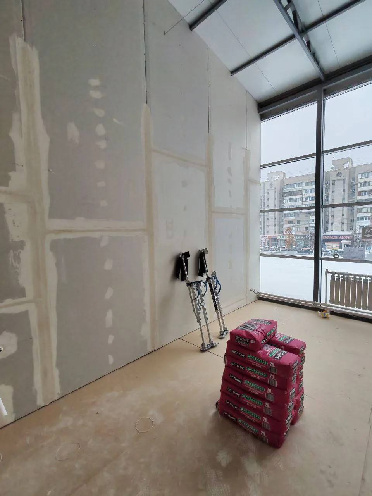
Кейс 01 · коммерческое помещениеПерегородки, разводка коммуникаций и выравнивание поверхностей под дальнейшие работы.
 Кейс 02 · квартира
Кейс 02 · квартираРезультат подготовки стен и потолков перед финишной отделкой.
 Кейс 03 · санузел
Кейс 03 · санузелРабота с геометрией, примыканиями и поверхностями влажного помещения.
От подготовительных этапов до готового интерьера: стены, плитка, откосы, примыкания, свет и чистовая геометрия.

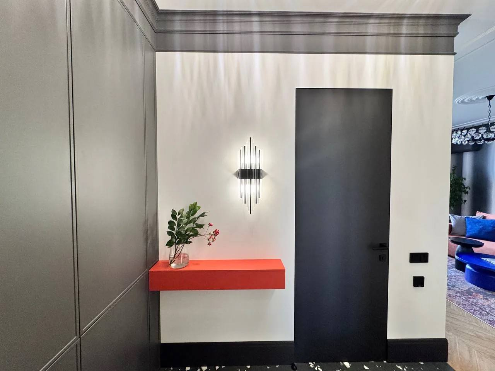
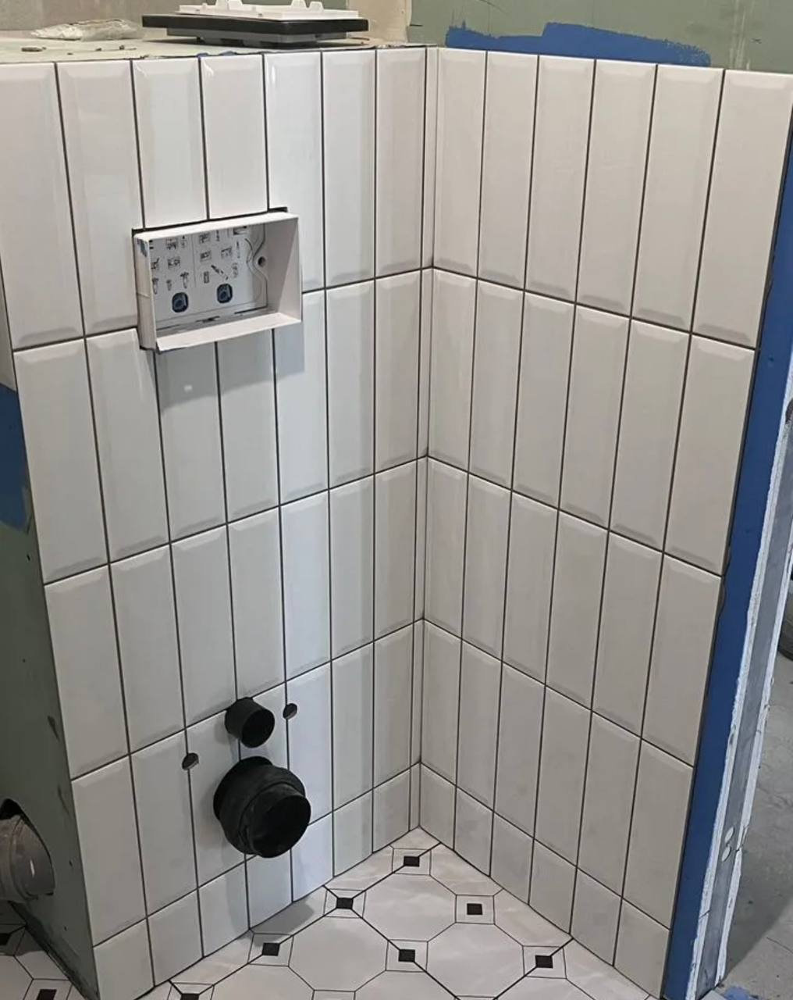
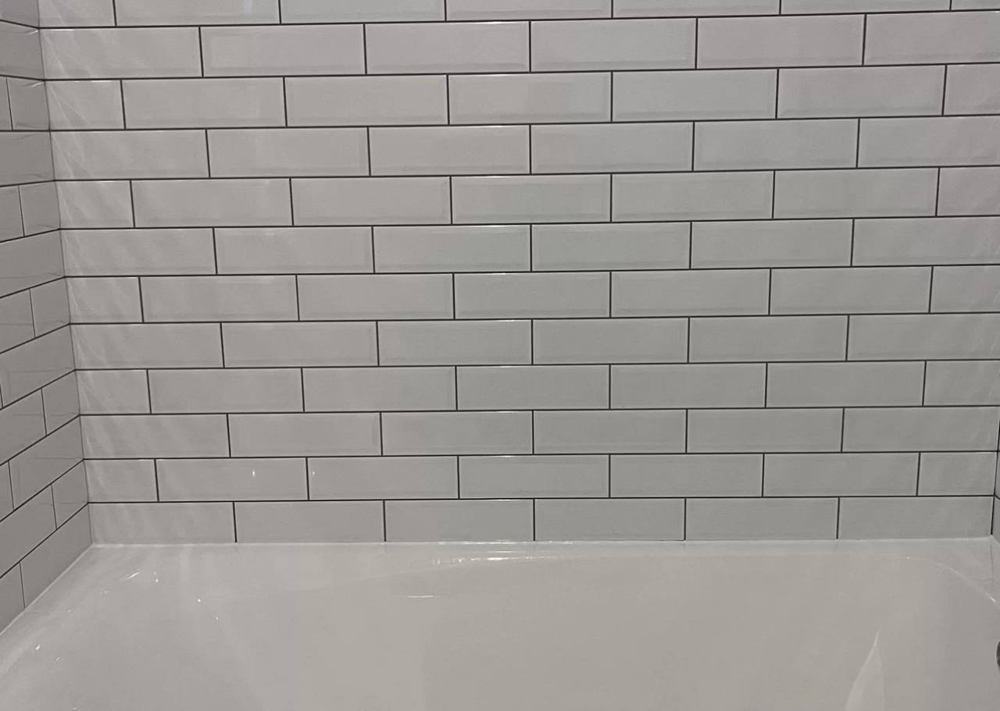
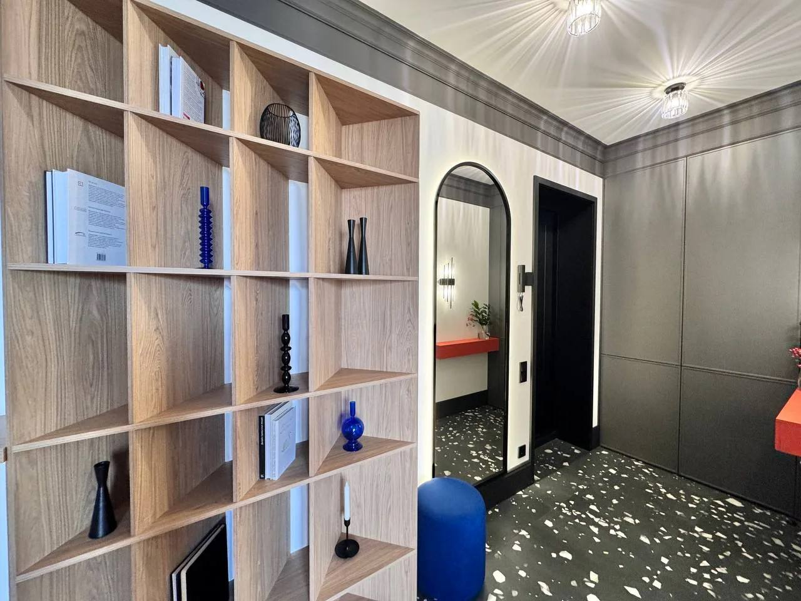

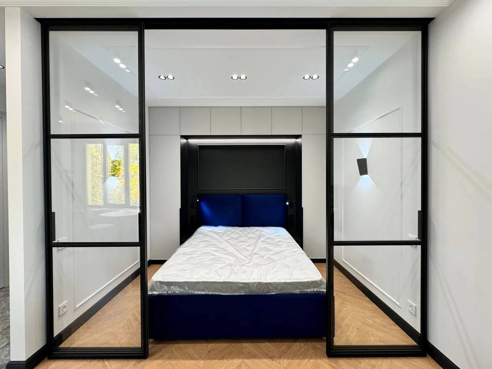
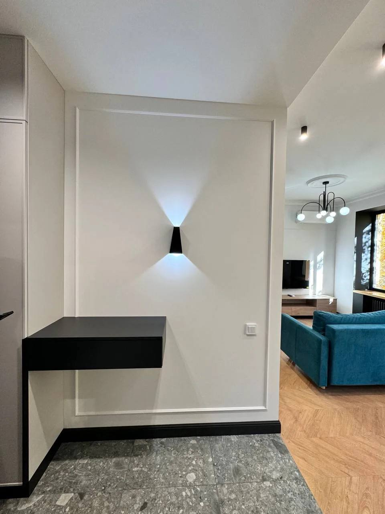
Работаем механизированным способом и своей техникой — без поиска исполнителей на каждый этап.
На замере определяем состояние основания и предлагаем технологию под задачу помещения.
Работаем через ИП, оформляем договор и согласуем смету, сроки и этапы оплаты.
При необходимости берём закупку на себя и согласуем материалы с заказчиком.
Оставьте контакты: уточним площадь, состояние стен и необходимый результат, затем подготовим предварительный расчёт и согласуем время замера.
Квартиры, дома, новостройки и коммерческие помещения. На замере определяем оптимальный состав работ и технологию.
Работаем по всем районам города и обычно выезжаем до 30 км. Для крупных долгосрочных объектов возможен другой город.
В большинстве случаев закупку берём на себя и согласуем материалы с заказчиком до начала работ.
Срок начала согласуем после замера, сметы и подтверждения комплектации материалов.
Готовые интерьеры и ключевые этапы работ: санузлы, жилые зоны, кухни, спальни и подготовка поверхностей.
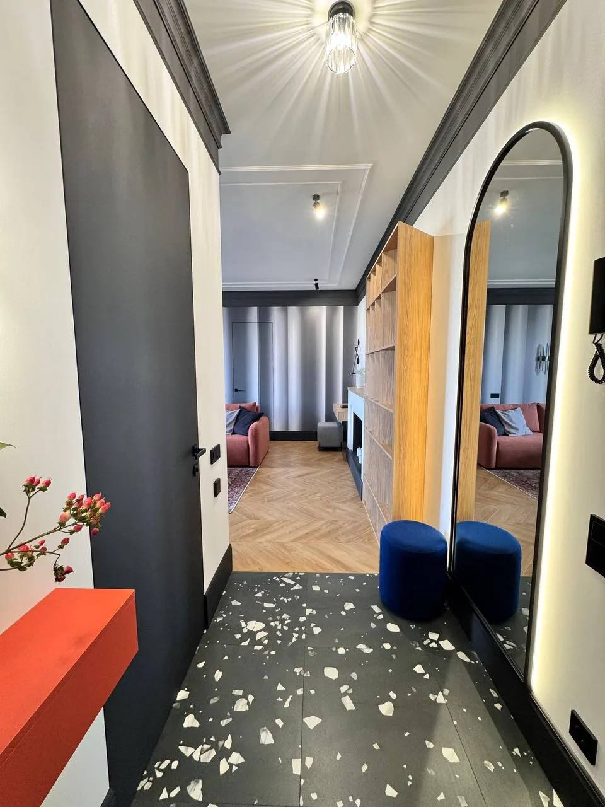
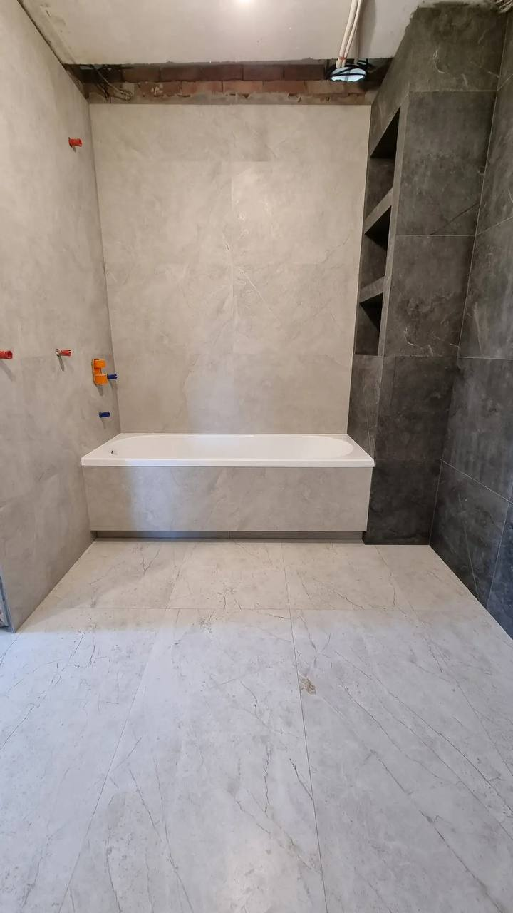
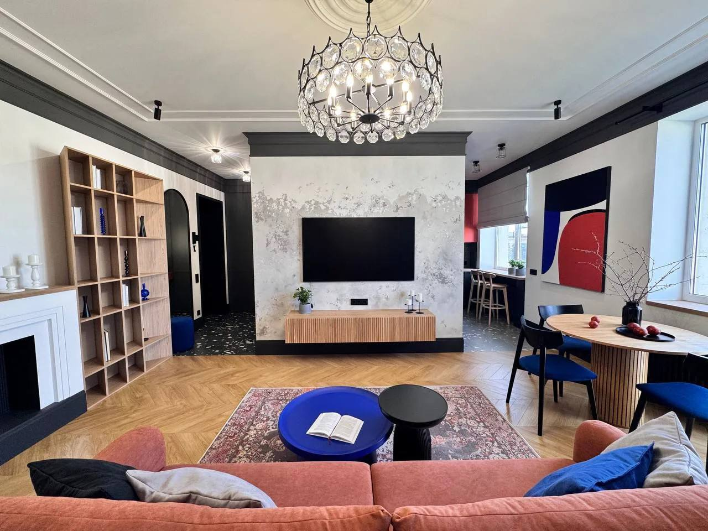
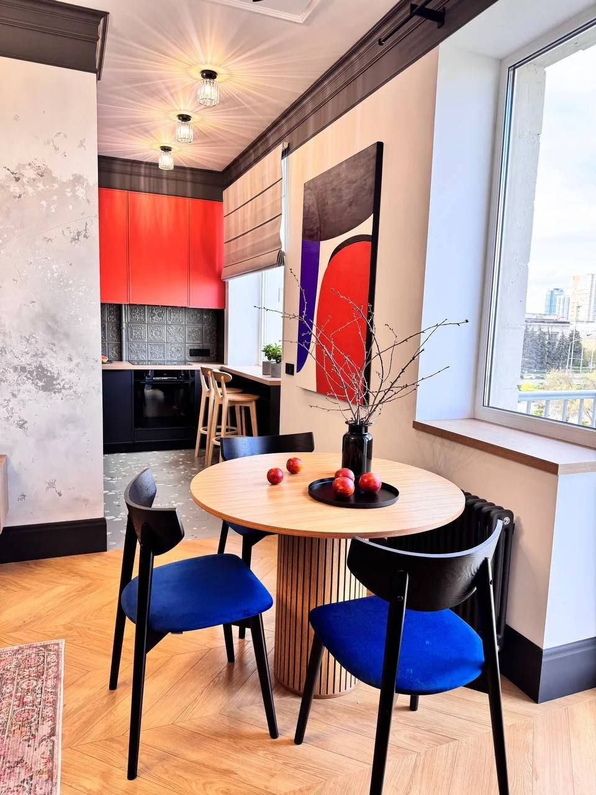
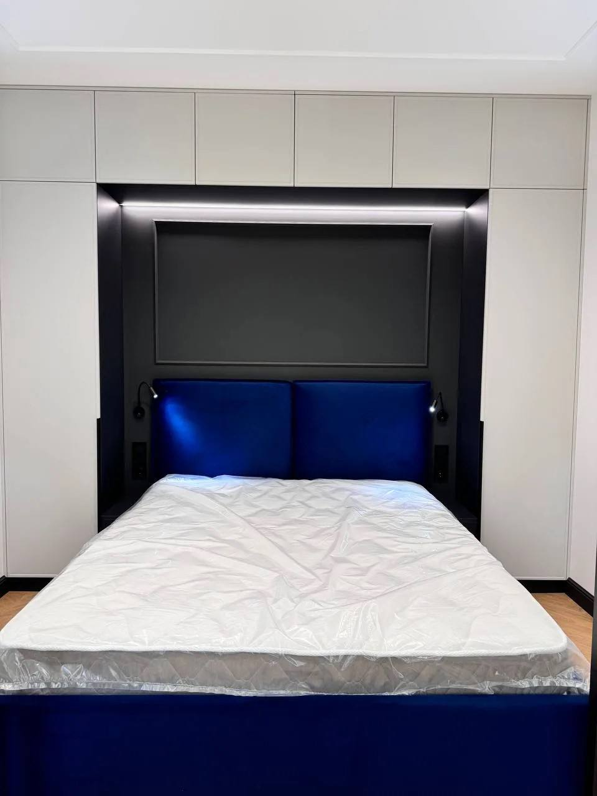
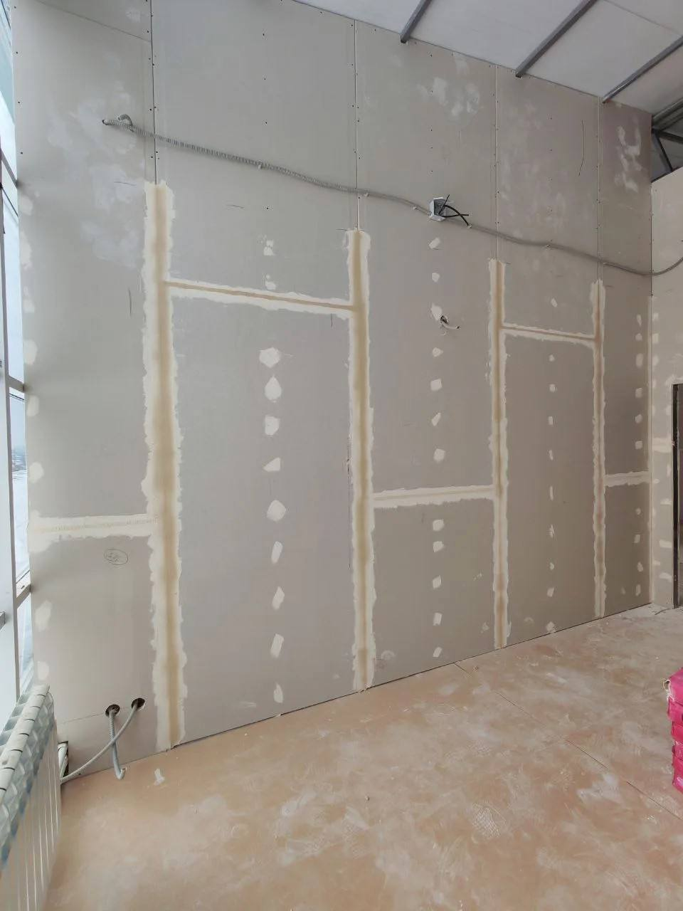
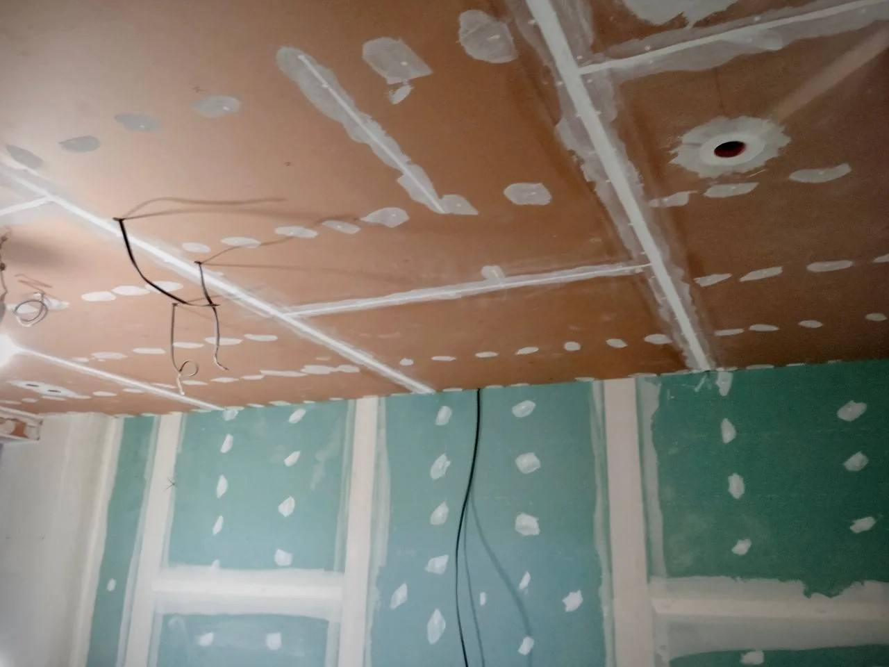

Оператор сайта обрабатывает имя и номер телефона только для связи по заявке, расчёта стоимости и организации замера. Данные не передаются третьим лицам, кроме случаев, предусмотренных законодательством РФ. Согласие можно отозвать, связавшись с исполнителем по указанным на сайте контактам.
Реквизиты исполнителя: ИП — реквизиты, ИНН/ОГРНИП и адрес будут размещены после предоставления данных исполнителя.